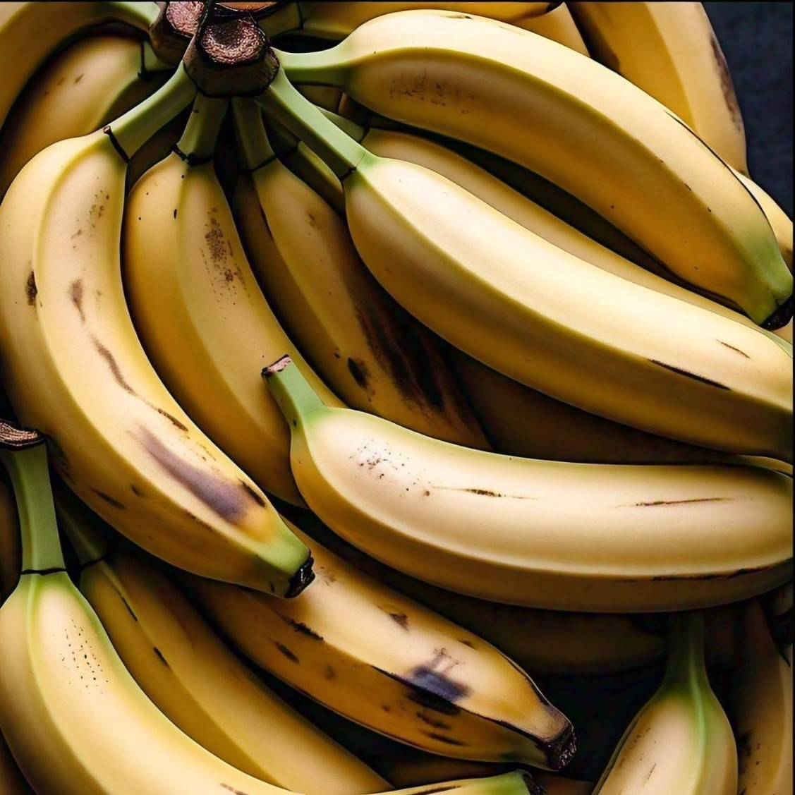

Nuestros Sabores de Helados

Helado de Banana
Bananas frescas y naturales, sin conservantes.
Helado de Naranja
Naranjas frescas y jugosas, una explosión de vitamina C.
Helado de Manzana
Manzanas crocantes, sin ningún aditivo artificial.
Helado de Frutilla
Frutillas naturales, refrescantes y saludables.

Helado de Durazno
Duraznos jugosos, un sabor que no olvidarás.
Helado de Kiwi
Kiwis exóticos, refrescantes y llenos de vitaminas.